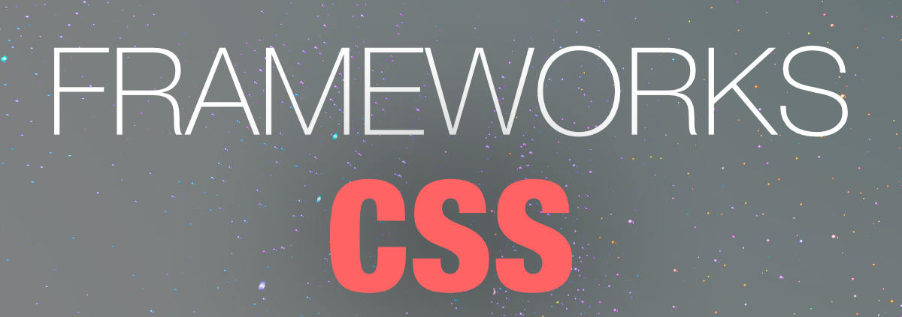

Frameworks CSS
permiten editar de una manera más ágil las hojas de estilo en cascada y crear temas de diseño consistentes.

Los frameworks se utilizan en el ámbito de la programación de aplicaciones desde hace décadas. Recientemente han comenzado a utilizarse para programar y diseñar aplicaciones web, por lo que ya existen decenas de frameworks para CSS.
Genéricamente, un framework es un conjunto de herramientas, librerías, convenciones y buenas prácticas que pretenden encapsular las tareas repetitivas en módulos genéricos fácilmente reutilizables.
De la misma forma, un framework CSS es un conjunto de herramientas, hojas de estilos y buenas prácticas que permiten al diseñador web olvidarse de las tareas repetitivas para centrarse en los elementos únicos de cada diseño en los que puede aportar valor.
¿Qué aporta a un diseñador descubrir en cada diseño que debe neutralizar los estilos por defecto que aplican los navegadores? ¿Qué aporta un diseñador que se dedica continuamente a resolver los mismos problemas que se producen al crear layouts complejos? ¿Por qué el diseñador se dedica a tareas y problemas que han sido resueltos satisfactoriamente hace mucho tiempo?
Los frameworks CSS más completos incluyen utilidades para que el diseñador no tenga que trabajar en ningún aspecto genérico del diseño web. Por este motivo, es habitual que los mejores frameworks CSS incluyan herramientas para:
- Neutralizar los estilos por defecto que aplican los navegadores. Se trata de la habitual hoja de estilos reset.css que todos los diseñadores profesionales utilizan.
- Manejar correctamente el texto, de forma que todos los contenidos se vean exactamente igual en todos los navegadores y que sean adaptables para mejorar su accesibilidad y permitir su acceso en cualquier medio y/o dispositivo.
- Crear cualquier estructura compleja o layout de forma sencilla, con la seguridad de que funciona correctamente en cualquier versión de cualquier navegador.
Actualmente existen decenas de frameworks CSS, tal y como se recoge en la página List of CSS frameworks de la Wikipedia. creado por Yahoo!